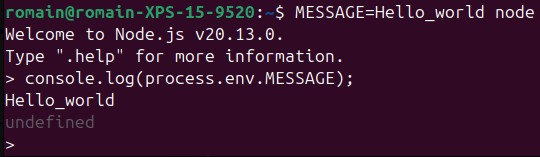
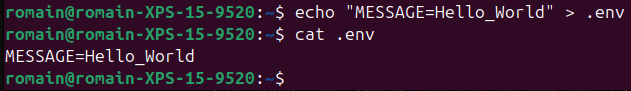
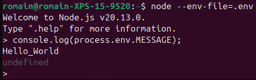
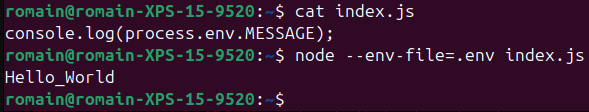

Node 02 - 🛰️ Utiliser un fichier .env
Objectifs
- Comprendre le concept d'environnement.
- Utiliser un fichier
.envavec la commandenode.
Pré-requis
- 1
Valider la quête suivante
Quêtes liées
Introduction
Les fichiers .env sont des fichiers de configuration utilisés pour stocker des variables d'environnement dans un format simple, lisible et facile à gérer. Ils sont largement utilisés dans les applications modernes, en particulier dans les projets basés sur des frameworks comme Node.js, Django, Laravel, et bien d'autres.
Sommaire
Variables d'environnement ?
Les variables d'environnement sont des variables qui sont définies dans le système d'exploitation ou dans le conteneur dans lequel l'application est exécutée.
Les variables d'environnement remplissent plusieurs rôles :
- Configuration dynamique : Les variables permettent d'adapter une application à différents environnements (développement, test, production).
- Sécurité : Elles permettent de stocker des informations sensibles hors du code source.
- Portabilité : En les utilisant, tu peux facilement déployer la même application sur plusieurs systèmes (Linux, macOS, Windows) en modifiant uniquement les valeurs des variables d'environnement.
En pratique
Une variable d'environnement, comme une variable en JavaScript, est un nom associé à une valeur. Par convention, le nom doit être en majuscule :
MY_VARIABLE=Hello_world
Pour créer une variable d'environnement temporaire, tu peux la définir avant d'exécuter la commande node.
Ouvre un terminal et tape :
MESSAGE=Hello_World node
La syntaxe est différente selon l'interface en ligne de commande que tu utilises sur Windows.
Avec PowerShell, ouvre un terminal et tape :
$env:MESSAGE="Hello_World" node
Avec CMD ouvre un terminal et tape :
set MESSAGE="Hello_World" node
Ici, une session node est démarrée avec la variable d'environnement MESSAGE contenant Hello_World.
Si tu tapes console.log(process.env.MESSAGE), tu devrais voir Hello_World :

(Utilise la commande .exit pour quitter la session node)
Utiliser un fichier .env
Définir les variables d'environnement lors du lancement de l'application comme dans l'exemple précédent n'est pas très pratique. Imagine si ton application nécessite plusieurs variables !
C'est là que les fichiers .env interviennent.
Un fichier .env est un fichier texte contenant des paires clé-valeur qui définissent des variables d'environnement pour une application. Ces variables peuvent être des informations sensibles ou spécifiques à un environnement, telles que :
- Les clés d'API
- Les URL des bases de données
- Les configurations spécifiques à l'environnement (développement, production, etc.)
Un fichier .env dans un projet réel pourrait ressembler à ça :
# Configuration de la base de données
DB_HOST=localhost
DB_PORT=5432
DB_USER=admin
DB_PASSWORD=secret
# Clés API
API_KEY=abcd1234xyz
Tu peux en créer un simple avec cette commande :
echo "MESSAGE=Hello_World" > .env
Contrôle ensuite le contenu du fichier .env avec la commande cat :

L'utilisation d'un fichier .env dépend du langage ou du framework que tu utilises. Avec la commande node tu peux utiliser l'option --env-file= suivi du chemin vers ton fichier. Toujours dans le même répertoire :
node --env-file=.env
Tu peux maintenant afficher le contenu de process.env.MESSAGE avec un console.log :

(Utilise la commande .exit pour quitter la session node)
Accéder aux variables via process.env marche également depuis un fichier .js exécuté avec node. Par exemple, si tu crées un fichier index.js avec ce code (dans le même dossier que ton fichier .env) :
console.log(process.env.MESSAGE);
Tu peux l'exécuter avec la commande node et l'option --env-file :

L'option --env-file est relativement récente. Tu entendras peut-être parler du module dotenv en discutant avec des devs : c'était la référénce pour utiliser un fichier .env avant l'ajout de l'option --env-file à la commande node.
Bonnes pratiques
⚠️ Ne publie jamais d'informations sensibles ! ⚠️
Le fichier .env doit TOUJOURS être ajouté dans le fichier .gitignore afin de ne pas partager des données sensibles via un dépôt public (sur GitHub par exemple) !
# .gitignore
node_modules/
.env
Cependant, tu devrais mettre dans le dépôt un fichier d'exemple avec des valeurs fictives (appelé .env.sample par convention), permettant de savoir quels paramètres sont nécessaires pour que l'application fonctionne. N'importe qui pourra ensuite créer localement son propre .env à partir de cet exemple.
# .env.sample file
# Configuration de la base de données
DB_HOST=localhost
DB_PORT=5432
DB_USER=YOUR_DB_USER
DB_PASSWORD=YOUR_DB_PASSWORD
# Clés API
API_KEY=YOUR_SECRET_API_KEY
Résumé
- Les paramètres qui dépendent de l'environnement doivent être stockés dans un fichier
.env, sous la formeKEY=valeur(une paire clé-valeur par ligne). - Ce fichier est passé à la commande
nodeavec l'option--env-file. - Les variables sont ensuite accessibles dans l'application, via
process.env.KEY(remplaceKEYpar le nom de ta variable). - Le fichier
.envne doit pas être versionné avec Git (utilise .gitgnore).
Challenge
Crée une petite application JavaScript qui va afficher ce message :
I am <name>, wilder in <city>, and I love <language>.
Les valeurs <name>, <city> et <language> doivent être remplacées par des variables d'environnement MY_NAME, MY_CITY et MY_LANGUAGE.
Ces variables doivent être chargées depuis un fichier .env.
Afin de ne pas le partager, écris un "modèle" .env.sample : il doit indiquer les différentes paires clé-valeur à saisir dans le .env avec des valeurs fictives.
Partage ta solution sur un dépôt GitHub contenant :
- Le code JavaScript
- Le fichier
.env.sample. - Le fichier
.gitignore.
Critères de validation
- [ ] L'application utilise les variables d'environnement.
- [ ] Le fichier
.env.samplefournit un exemple de ce à quoi le fichier.envdevrait ressembler.
Ce que tu devrais avoir dans :
console.log(
`I am ${process.env.MY_NAME}, wilder in ${process.env.MY_CITY}, and I love ${process.env.MY_LANGUAGE}`
);
.env
MY_NAME=Bob
MY_CITY=Paris
MY_LANGUAGE=Javascript